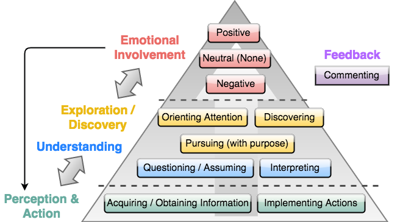
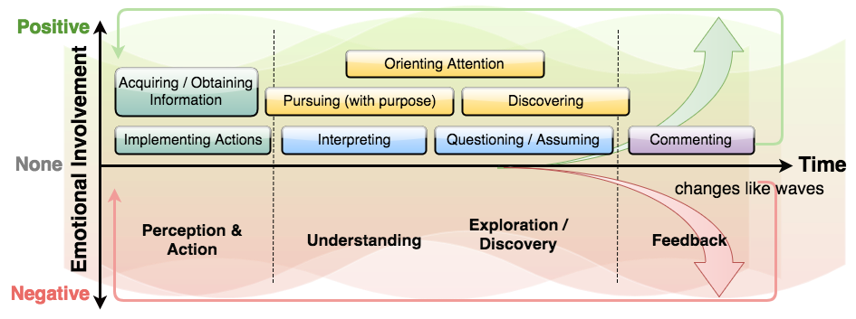

Models of Affective Engagement (AE) in InfoVis
Two models of AE emerged as a result of our two-stage analysis. The first is a model of the structural features of AE as users interact with visualizations. The second is a model of the temporal process and fluctuations of AE as it develops over time as users interact with visualizations.
Terminology
We refer to the following activities in our discussions, capitalizing the first letter of the activity to indicate that it was derived from our qualitative coding:
- Acquiring/Obtaining
- Information
- Interpreting
- Questioning/Assuming
- Pursuing (with purpose)
- Orienting Attention
- Discovering, and
- Commenting
- Positive
- Neutral (none)
- Negative
- Surprise, and
- Curiosity
Model of the structure and characteristics of AE in InfoVis

There are three levels (from low to high) corresponding to the codes from stage 1 analysis:
- (1) perception & action
- (2) understanding and explo- ration/discovery; and
- (3) emotional involvement. Each level has several associated activities listed within it.
Model of process and development of AE in InfoVis

Perception & action, exploration/discovery and understanding, and feedback are levels on the horizontal axis (time). Emotional involvement is on the vertical axis, with the middle being neutral (none), above being positive, and below being negative.
In this model, AE is represented using a wave metaphor. Similar to actual waves, users’ emotional status fluctuates over time.